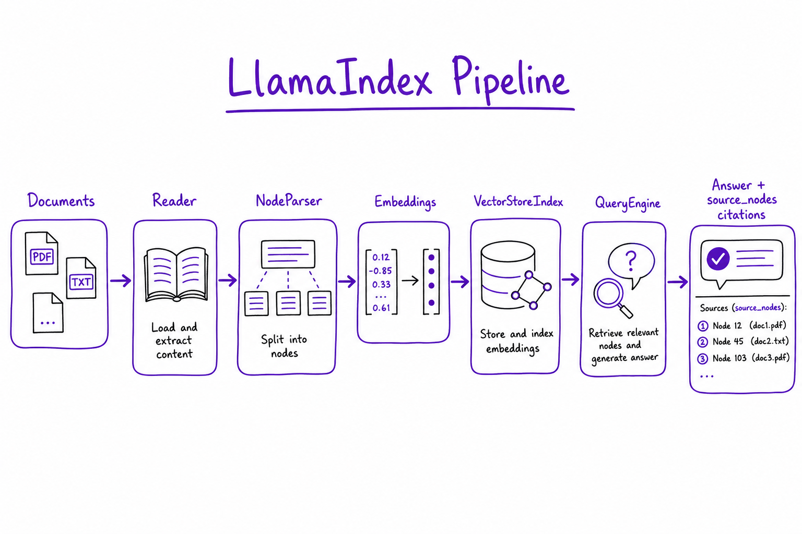
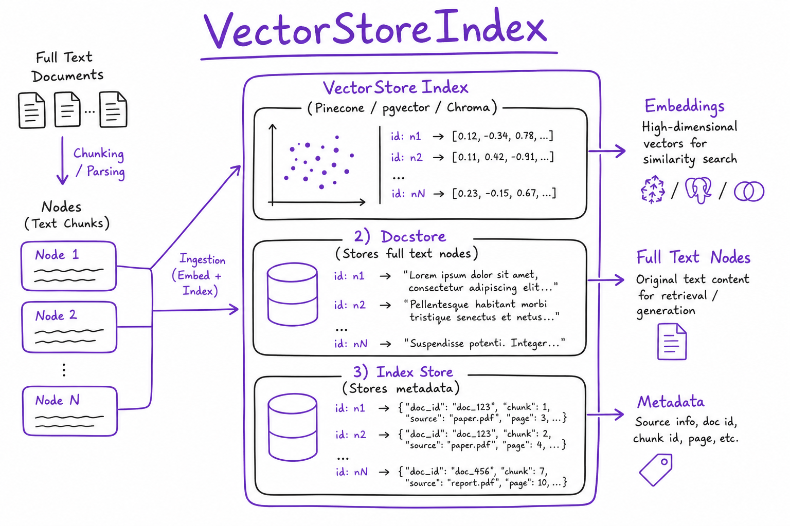
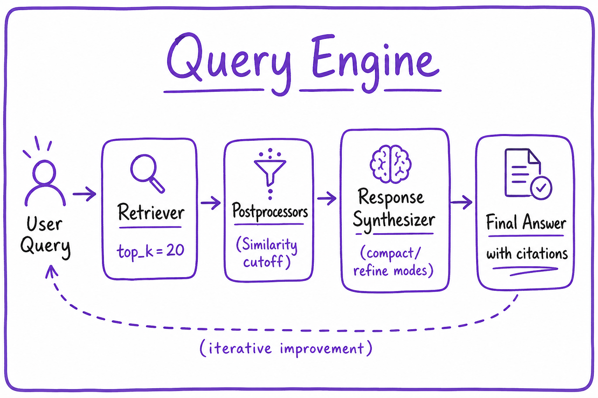

LlamaIndex // AI Tech
Data framework for LLM apps: document loaders, node parsers, indices (vector, tree, keyword), query engines, and agents. Strongest when ingestion + retrieval complexity dominates.

LlamaIndex pipeline: load documents → parse to Nodes → build VectorStoreIndex → QueryEngine (retriever + synthesizer) → response with source_nodes citations.
01 — What & Why
Problem: RAG apps spend most engineering time on getting data in (loaders, chunking, metadata) and querying it out (retrieval, synthesis, citations) — not on prompt wording alone.
Functional
- 100+ document loaders (PDF, Notion, SQL, APIs)
- Parse documents into Nodes (chunks + metadata)
- Build Indices backed by vector stores
- QueryEngine retrieve + synthesize with
source_nodesfor citations
Non-Functional
- Persist indices to disk or managed vector DB
- IngestionPipeline for parallel extract/embed at scale
- Eval recall via source_nodes on golden queries
For agent orchestration with HITL prefer LangGraph wrapping a LlamaIndex retriever as a tool. Embeddings via OpenAI API or Embedding Models.
01a — Core Concepts
| Term | Definition | Gotcha |
|---|---|---|
| Document | Loaded file or record with text + metadata | Not yet chunked for embedding |
| Node | Chunk + metadata — smallest indexed unit | What gets embedded and retrieved |
| Index | Data structure over nodes (VectorStoreIndex common) | Wrong chunk size hurts recall more than prompt tuning |
| QueryEngine | query → retriever → response synthesizer | Returns response.source_nodes for citations |
| StorageContext | docstore + vector store + index store | Persist together for consistent reload |
01b — API / Interface Surface
from llama_index.core import VectorStoreIndex, SimpleDirectoryReader, Settings
from llama_index.embeddings.openai import OpenAIEmbedding
from llama_index.llms.openai import OpenAI
Settings.embed_model = OpenAIEmbedding(model="text-embedding-3-small")
Settings.llm = OpenAI(model="gpt-4o-mini")
docs = SimpleDirectoryReader("./data").load_data()
index = VectorStoreIndex.from_documents(docs)
engine = index.as_query_engine(similarity_top_k=10)
response = engine.query("What is our refund policy?")
print(response)
for node in response.source_nodes:
print(node.score, node.metadata) | API | Purpose |
|---|---|
from_documents | Ingest + embed + index in one call |
as_query_engine | Retriever + synthesizer bundle |
as_retriever | Use in LangChain/LangGraph chains |
storage_context.persist | Save local index to disk |
Settings singleton
Settings.embed_model and Settings.llm apply globally unless overridden per index/query. Set once at app startup; inject test doubles in unit tests.
from llama_index.core import Settings Settings.chunk_size = 512 Settings.chunk_overlap = 50 Settings.embed_model = OpenAIEmbedding(model="text-embedding-3-small") Settings.llm = OpenAI(model="gpt-4o-mini", temperature=0.1)
02 — When to Use / When NOT
03 — Architecture
Sources (PDF, Notion, SQL)
|
v
+----------+
| Reader |
+-----+----+
v
+----------+
|NodeParser| chunk_size / overlap
+-----+----+
v
+----------+
| Embedder |
+-----+----+
v
+--------------+
| VectorStore | Pinecone / pgvector / Chroma
+------+-------+
v
+--------------+
| QueryEngine | top_k -> synthesizer -> answer
+--------------+Eval loop (recommended):
golden_questions.jsonl
-> engine.query(q)
-> check expected doc_id in source_nodes[:5]
-> track recall@5 weekly
-> block deploy if recall drops > 5% 04 — Deep Dive: Indices

VectorStoreIndex backed by Pinecone/pgvector/Chroma with docstore for full text.
Index types
- VectorStoreIndex — production default; ANN over embeddings
- SummaryIndex — sequential summarization over all nodes
- TreeIndex — hierarchical query over tree of summaries
- KnowledgeGraphIndex — entity/relation extraction
from llama_index.vector_stores.pinecone import PineconeVectorStore vector_store = PineconeVectorStore(pinecone_index=pinecone_index) index = VectorStoreIndex.from_vector_store(vector_store)
Attach existing managed index instead of rebuilding on every deploy.
| Index type | Best for | Production? |
|---|---|---|
| VectorStoreIndex | Semantic search over chunks | Yes — default |
| SummaryIndex | Summarize-all-then-query | Small corpora only |
| TreeIndex | Hierarchical QA | Niche |
| KnowledgeGraphIndex | Entity/relation queries | Experimental |
Production: attach Pinecone index
import os
from pinecone import Pinecone
from llama_index.core import VectorStoreIndex, StorageContext
from llama_index.vector_stores.pinecone import PineconeVectorStore
pc = Pinecone(api_key=os.environ["PINECONE_API_KEY"])
pinecone_index = pc.Index("rag-prod-v1")
vector_store = PineconeVectorStore(pinecone_index=pinecone_index)
storage_context = StorageContext.from_defaults(vector_store=vector_store)
index = VectorStoreIndex.from_vector_store(
vector_store, storage_context=storage_context)
# Query with tenant filter via MetadataFilters
from llama_index.core.vector_stores import MetadataFilters, ExactMatchFilter
filters = MetadataFilters(filters=[ExactMatchFilter(key="tenant_id", value="acme")])
engine = index.as_query_engine(similarity_top_k=15, filters=filters)See Pinecone and Vector Databases for namespace and metadata filter design.
05 — Deep Dive: Query Engine

Query engine: retriever top_k=20, postprocessor, compact/refine synthesizer modes.
from llama_index.core.postprocessor import SimilarityPostprocessor
engine = index.as_query_engine(
similarity_top_k=20,
node_postprocessors=[SimilarityPostprocessor(similarity_cutoff=0.7)],
response_mode="compact", # or refine, tree_summarize
)
response = engine.query("Refund policy for EU customers?")Response modes
- compact — single prompt with all chunks (fast)
- refine — iterative refinement per chunk (slow, thorough)
- tree_summarize — hierarchical merge for long contexts
Add reranker after retrieval for better precision.
from llama_index.core.retrievers import QueryFusionRetriever
from llama_index.retrievers.bm25 import BM25Retriever
vector_retriever = index.as_retriever(similarity_top_k=20)
bm25_retriever = BM25Retriever.from_defaults(docstore=index.docstore, similarity_top_k=20)
fusion_retriever = QueryFusionRetriever(
retrievers=[vector_retriever, bm25_retriever],
similarity_top_k=20,
num_queries=1,
mode="reciprocal_rerank",
)
engine = RetrieverQueryEngine.from_args(
retriever=fusion_retriever,
node_postprocessors=[SimilarityPostprocessor(similarity_cutoff=0.7)],
)
06 — Deep Dive: Ingestion
from llama_index.core.ingestion import IngestionPipeline
from llama_index.core.node_parser import SentenceSplitter
pipeline = IngestionPipeline(
transformations=[
SentenceSplitter(chunk_size=512, chunk_overlap=50),
Settings.embed_model,
],
vector_store=vector_store,
)
nodes = pipeline.run(documents=docs, show_progress=True)LlamaHub: 100+ loaders (Notion, Slack, Google Drive). Coordinate with Document Ingestion system design for scheduling, dedup, and PII handling.
07 — Deep Dive: Agents
query_engine_tool = QueryEngineTool.from_defaults(
query_engine=engine,
name="company_kb",
description="Search internal policy documents",
)
# OpenAIAgent or ReActAgent with query_engine_toolsLlamaIndex agents combine tools + query engines. For production control (HITL, checkpointing) wrap retriever in LangGraph tool node instead.
from llama_index.core.agent import ReActAgent
from llama_index.core.tools import QueryEngineTool
qe_tool = QueryEngineTool.from_defaults(
query_engine=engine,
name="policy_kb",
description="Internal HR and refund policies",
)
agent = ReActAgent.from_tools([qe_tool], llm=Settings.llm, verbose=True)
response = agent.chat("Can EU customers get refunds after 30 days?")ChatEngine for multi-turn
chat_engine = index.as_chat_engine(chat_mode="condense_question")
response = chat_engine.chat("What about enterprise plans?")
# condense_question rewrites follow-up using history before retrieveFor durable session state in production, prefer explicit history store + query engine per turn (Agent Memory).
08 — LlamaIndex vs LangChain
| Dimension | LlamaIndex | LangChain |
|---|---|---|
| Focus | Indexing, query, citations | General chains, tools, agents |
| Ingestion | First-class loaders + pipelines | Document loaders + text splitters |
| Query API | QueryEngine with source_nodes | Retriever + LCEL chain |
| Agents | Built-in ReAct agents | LangGraph recommended for prod |
| Combine | LI retriever in LC/LG chain | Best of both common |
09 — Production & Ops
| Concern | Practice |
|---|---|
| Storage | Persist to Pinecone / pgvector, not local disk |
| Versioning | Embed model version in index/namespace name |
| Eval | Golden queries on source_nodes recall@k |
| Scale | IngestionPipeline async; batch embed |
| Multi-tenant | Metadata filters on tenant_id at query time |
10 — Where It Shows Up
- RAG End-to-End — full pipeline reference
- Chatbot RAG System — production chat
- Vector Databases — storage layer
- Chunking Strategies — node parser tuning
- Hybrid Search — QueryFusionRetriever
- LangChain — orchestration layer
- Embeddings & Semantic Search — theory
- OpenAI API Patterns — embed + LLM calls
- Eval Harness — source_nodes recall tests
11 — Common Pitfalls
- Default chunk size wrong for your docs — eval before prod
- Not persisting index — rebuild every deploy wastes time and money
- Ignoring source_nodes in eval — answer quality can hide bad retrieval
- Mixing embedding models in same index — never do this
- refine mode at scale — too many LLM calls; prefer compact + rerank
- Skipping metadata filters — cross-tenant leakage in multi-tenant SaaS
Re-index playbook
- Create new namespace/collection with embed version suffix (e.g.
_e3small_v2) - Run IngestionPipeline on full corpus into new namespace
- Eval recall@5 on golden set against new index
- Blue/green switch query engine config in app
- Delete old namespace after 7-day rollback window
Coordinate with Document Ingestion jobs for scheduled refresh.
12 — Interview Q&A
Node vs Document?
VectorStoreIndex vs loading vector DB directly?
from_vector_store() to attach existing Pinecone/pgvector without re-embedding.How get citations?
response.source_nodes lists retrieved nodes with scores and metadata. Pass file/page refs to UI; log for eval harness.Query engine vs chat engine?
LlamaIndex vs LangChain for RAG?
Persist index?
storage_context.persist() to local disk for dev; write to managed vector DB for prod. Namespace/index name includes embed model version.Custom node parser?
SentenceSplitter with chunk_size/overlap; SemanticSplitter for embedding-based splits. Match chunking eval results.Hybrid search in LlamaIndex?
QueryFusionRetriever combines multiple retrievers; add BM25 via Elasticsearch retriever + vector retriever + reciprocal rank fusion.